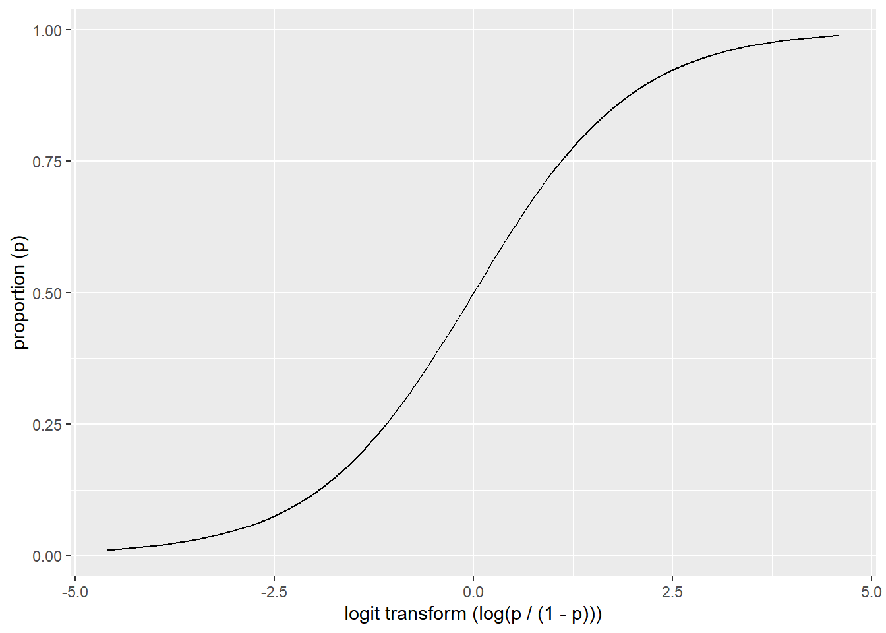
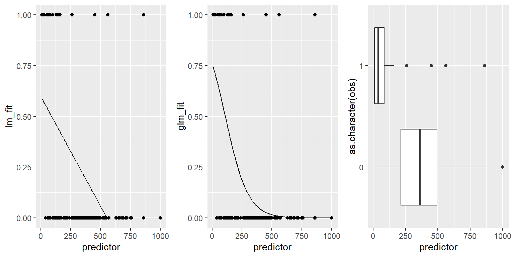
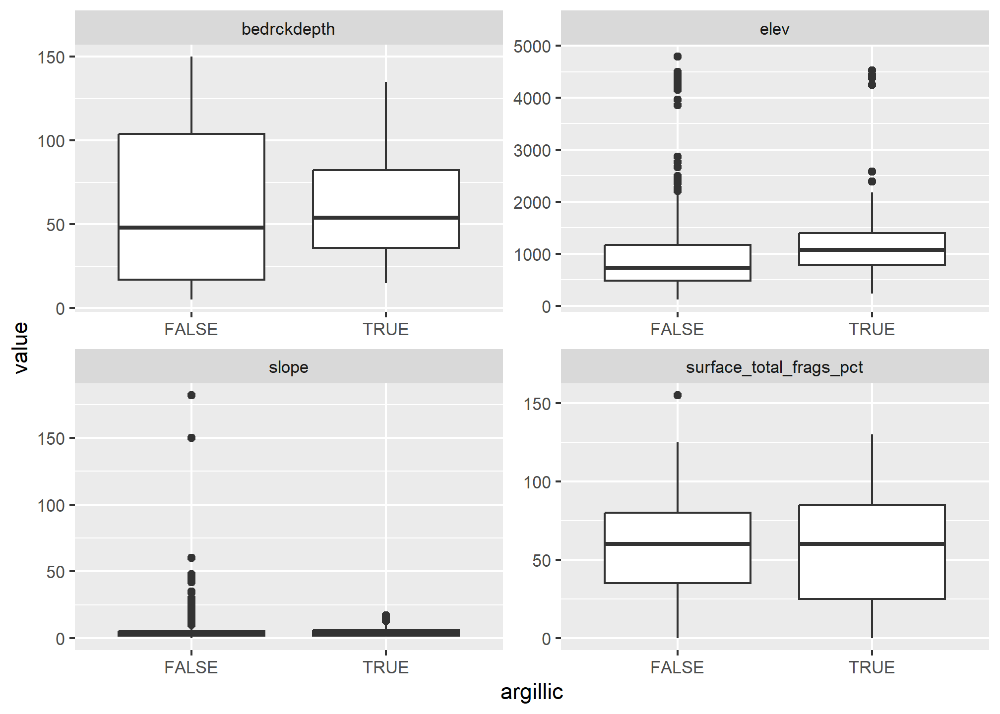

Chapter 5 Generalized Linear Models

5.1 Introduction
Generalized linear models (GLM) as the name implies are a generalization of the linear modeling framework to allow for the modeling of response variables (e.g. soil attributes) with non-normal distributions and heterogeneous variances. Whereas linear models are designed for predicting continuous soil properties such as clay content or soil temperature, GLM can be used to predict the presence/absence of argillic horizons (i.e. logistic regression) or counts of a plant species along a transect (i.e. Poisson regression). These generalizations greatly expand the applicability of the linear modeling framework, while still allowing for a similar fitting procedure and interpretation of the resulting models.
In the past in order to handle non-linearity and heterogeneous variances, transformations have been made to the response variable, such as the log(x). However, such transformations complicate the models interpretation because the results refer to the transformed scale (e.g. log(x)). These response transformations are not guaranteed to achieve both normality and constant variance simultaneously. GLM approaches transform the response, but also preserve the scale of the response, and provide separate functions to transform the mean response and variance, known as the link and variance functions respectively. So instead of looking like this:
\(f(y) = \beta_{0} + \beta_{1}x + \varepsilon\)
you get this:
\(g(\mu)\) or \(\eta = \beta_{0} + \beta_{1}x + \varepsilon\)
with \(g(\mu)\) or \(\eta\) symbolizing the link function.
Another alteration of the classical linear model is that with GLM the coefficients are estimated iteratively by maximum likelihood estimation instead of ordinary least squares. This results in the GLM minimizing the deviance, instead of the sum of squares. However, for the Gaussian (i.e. normal) distributions the deviance and sum of squares are equivalent.
5.2 Logistic Regression
Logistic regression is a specific type of GLM designed to model data that has a binomial distribution (i.e. presence/absence, yes/no, or proportional data), which in statistical learning parlance is considered a classification problem. For binomial data the logit link transform is generally used. The effect of the logit transform can be seen in the following figure. It creates a sigmoidal curve, which enhances the separation between the two groups. It also has the effect of ensuring that the values range between 0 and 1.

When comparing a simple linear model vs a simple logistic model we can see the effect of the logit transform on the relationship between the response and predictor variable. As before it follows a sigmoidal curve and prevents predictions from exceeding 0 and 1.

5.3 Examples
Example 1: Probability of Mollisols (Beaudette & O’Geen, 2009)
Example 2: Probability of Red Clay (Evans & Hartemink, 2014)

Example 3: Probability of Ponding (NRCS Unpublished)
5.4 Exercise
Now that we’ve discussed some of the basic background GLM theory we’ll move on to a real exercise, and address any additional theory where it relates to specific steps in the modeling process. The examples selected for this chapter come from Joshua Tree National Park (JTNP)(i.e. CA794) in the Mojave desert. The problem tackled here is a familiar one: Where can I expect to find argillic horizons on fan piedmonts? Argillic horizons within the Mojave are typically found on fan remnants, which are a stable landform that is a remnant of the Pleistocene (Peterson, 1981). Despite the low relief of most fans, fan remnants are uplands in the sense that they generally don’t receive run-on or active deposition.
With this dataset we’ll encounter some challenges. To start with, fan piedmont landscapes typically have relatively little relief. Since most of our predictors will be derivatives of elevation, that won’t leave us with much to work with. Also, our elevation data comes from the USGS National Elevation dataset (NED), which provides considerably less detail than say LiDAR or IFSAR data (Shi et al., 2012). Lastly our pedon dataset like most in NASIS, hasn’t received near as much quality control as have the components. So we’ll need to wrangle some of the pedon data before we can analyze it. These are all typical problems encountered in any data analysis and should be good practice. Ideally, it would be more interesting to try and model individual soil series with argillic horizons, but due to some of the challenges previously mentioned it would be difficult with this dataset. However, at the end we’ll look at one simple approach to try and separate individual soil series with argillic horizons.
5.4.1 Load packages
To start, as always we need to load some extra packages. This will become a familiar routine every time you start R. Most of the basic functions we need to develop a logistic regression model are contained in base R, but the following contain some useful spatial and data manipulation functions. Believe it or not we will use all of them and more.
library(aqp) # specialized soil classes and functions
library(soilDB) # NASIS and SDA import functions
library(raster) # guess
library(sf) # vector data functions
# library(mapview) # interactive mapping
library(ggplot2) # graphing
library(tidyr) # data manipulation
library(caret) # classification and regression training
library(car) # additional regression tools5.4.2 Read in data
Hopefully like all good soil scientists and ecological site specialists you enter your field data into NASIS. Better yet hopefully someone else did it for you! Once data are captured in NASIS it is much easier to import the data into R, extract the pieces you need, manipulate it, model it, etc. If it’s not entered into NASIS, it may as well not exist. For this exercise we’ll load a cached dataset on GitHub.
# pedons <- fetchNASIS()
githubURL <- "https://raw.githubusercontent.com/ncss-tech/stats_for_soil_survey/master/data/ch7_data.Rdata"
load(url(githubURL))
# Examine the makeup of the data we imported from NASIS
str(pedons, max.level = 2)## Formal class 'SoilProfileCollection' [package "aqp"] with 9 slots
## ..@ idcol : chr "peiid"
## ..@ hzidcol : chr "phiid"
## ..@ depthcols : chr [1:2] "hzdept" "hzdepb"
## ..@ metadata :'data.frame': 1 obs. of 2 variables:
## ..@ horizons :'data.frame': 5163 obs. of 54 variables:
## ..@ site :'data.frame': 1220 obs. of 122 variables:
## ..@ sp :Formal class 'SpatialPoints' [package "sp"] with 3 slots
## ..@ diagnostic :'data.frame': 2161 obs. of 4 variables:
## ..@ restrictions:'data.frame': 0 obs. of 0 variables5.5 Exploratory analysis (EDA)
5.5.1 Data wrangling
Generally before we begin modeling you should spend some time exploring the data. By examining a simple summary we can quickly see the breakdown of how many argillic horizons we have. Unfortunately, odds are good that all the argillic horizons haven’t been consistently populated in the diagnostic horizon table like they should be. Luckily for us, the desert argillic horizons always pop up in the taxonomic name, so we can use pattern matching to extract it. By doing this we gain an additional 11 pedons with argillic horizons and are able to label the missing values (i.e. NA). At a minimum for modeling purposes we probably need 10 pedons of the target we’re interested in and a total of 100 observations overall.
## aqp_df_class metadata entry not found - run aqp::rebuildSPC() to fix##
## FALSE TRUE <NA>
## 790 263 167# or
# summary(s$argillic.horizon)
# Extract argillic presence from the taxonomic subgroup
s$argillic <- grepl("arg", s$taxsubgrp)
table(s$argillic, useNA = "ifany")##
## FALSE TRUE
## 1022 198Ideally, if the diagnostic horizon table had been populated consistently we could have used the upper depth to diagnostic feature to filter out argillic horizons that start below 50cm, which may not be representative of “good” argillic horizons and may therefore have gotten correlated to a Torripsamments anyway. Not only are unrepresentative sites confusing for scientists, they’re equally confusing for models. However, as we saw earlier, some pedons don’t appear to be fully populated, so we’ll stick with those pedons that have the argillic specified in their taxonomic subgroup name, since it gives us the biggest sample.
## aqp_df_class metadata entry not found - run aqp::rebuildSPC() to fixd_sub <- subset(d, featkind == "argillic horizon" & featdept < 50)
s$argillic.horizon50 <- ifelse(s$peiid %in% d_sub$peiid, TRUE, FALSE)
table(s$argillic.horizon50, useNA = "ifany")##
## FALSE TRUE
## 998 2225.5.2 Geomorphic data
Another obvious place to look is at the geomorphic data in the site table. This information is intended to help differentiate where our soil observations exist on the landscape. If populated consistently it could potentially be used in future disaggregation efforts, as demonstrated by Nauman and Thompson (2014).
# Landform vs argillic presence
# Subset
s_sub <- subset(s, argillic == TRUE)
# Cross tabulate landform vs argillic horizon presence
test <- with(s_sub,
table(landform, argillic, useNA = "ifany")
)
# Subset and print landform.string with > 3 observations
test[test > 3, ]## alluvial fans fan aprons
## 6 19
## fan aprons on fan remnants fan remnants
## 4 72
## hills hillslopes
## 15 28
## low hills mountain slopes
## 5 8
## mountains pediments
## 4 9
## <NA>
## 7# generalize the landform.string
s$landform_generic <- ifelse(grepl("fan|terrace|sheet|drainageway|wash", s$landform), "fan", "hill") Examining the above frequency table we can see that argillic horizons occur predominantly on fan remnants as was alluded too earlier. However, they also seem to occur frequently on other landforms - some of which are curious combinations of landforms or redundant terms.
# Hillslope position
# Subset fan landforms
s_sub <- subset(s, landform_generic == "fan")
# Cross tabulate and calculate proportions, the "2" calculates the proportions relative to the column totals
with(s_sub, round(
prop.table(table(hillslopeprof, argillic, useNA = "ifany"), 2)
* 100)
) ## argillic
## hillslopeprof FALSE TRUE
## summit 16 39
## shoulder 4 2
## backslope 14 20
## footslope 2 1
## toeslope 16 4
## <NA> 48 34# Slope shape
with(s_sub, round(
prop.table(table(paste(shapedown, shapeacross), argillic, useNA = "ifany"), 2)
* 100)
)## argillic
## FALSE TRUE
## concave concave 1 0
## concave convex 0 0
## concave linear 4 3
## convex concave 0 1
## convex convex 7 7
## convex linear 6 9
## linear concave 6 1
## linear convex 21 32
## linear linear 44 38
## linear NA 0 0
## NA NA 11 10Looking at the hillslope position of fan landforms we can see a slightly higher proportion of argillic horizons are found on summits, while less are found on toeslopes. Slope shape doesn’t seem to provide any useful information for distinguishing argillic horizons.
# Subset to just look and fans, and select numeric columns
s_sub <- subset(s, landform_generic == "fan", select = c(argillic, bedrckdepth, slope, elev, surface_total_frags_pct))
# convert s_sub to wide data format
s_w <- reshape2::melt(s_sub, id.vars = "argillic", measure.vars = c("bedrckdepth", "slope", "elev", "surface_total_frags_pct"))
head(s_w, 2)## argillic variable value
## 1 FALSE bedrckdepth NA
## 2 FALSE bedrckdepth 11library(ggplot2)
ggplot(s_w, aes(x = argillic, y = value)) +
geom_boxplot() +
facet_wrap(~ variable, scale = "free")## Warning: Removed 680 rows containing non-finite values (stat_boxplot).
Looking at boxplots of our numeric variables we can see none of them show much separation between the presense/absense of argillic horizons.
5.5.3 Soil Scientist Bias
Next we’ll look at soil scientist bias. The question being: Are some soil scientists more likely to describe argillic horizons than others? Due to the excess number of soil scientist that have worked on CA794, including detailees, we’ve filtered the names of soil scientist to include just the top 3 mappers and given priority to the most senior soil scientists when they occur together.
# Custom function to filter out the top 3 soil scientists
s <- within(s, {
old = descname
descname2 = NA
descname2[grepl("Stephen", old)] = "Stephen" # least senior
descname2[grepl("Paul", old)] = "Paul"
descname2[grepl("Peter", old)] = "Peter" # most senior
})s_sub <- subset(s, landform_generic == "fan")
# By frequency
with(s_sub, table(descname2, argillic, useNA = "ifany"))## argillic
## descname2 FALSE TRUE
## Paul 77 28
## Peter 268 29
## Stephen 66 13
## <NA> 157 45## argillic
## descname2 FALSE TRUE
## Paul 73 27
## Peter 90 10
## Stephen 84 16For fan landforms, one of the soil scientists seems more likely than the others to describe argillic horizons. However while this information is suggestive, it is far from definitive in showing a potential bias because it doesn’t take into account other factors. We’ll examine this more closely later.
5.5.4 Plot coordinates
Where do our points plot? To start we need to convert them to a spatial object first. Then we can create an interactive we map using mapview. Also, if we wish we can also export the locations as a Shapefile.
library(sf)
library(dplyr)
# create an index to remove sites without coordinates
idx <- complete.cases(s$x_sdt, s$y_std)
s_sub <- s[idx, ]
# convert to sites to a spatial object
s_sf <- st_as_sf(s_sub,
coords = c("x_std", "y_std"),
crs = 4326
) %>%
# reproject
st_transform(crs = 5070)
# Read in soil survey area boundaries
ca794 <- read_sf(dsn = "D:/geodata/soils/soilsa_a_nrcs.shp", layer = "soilsa_a_nrcs") %>%
# subset out Joshua Tree National Park
filter(areasymbol == "CA794") %>%
# reproject
st_transform(crs = 5070)
# Plot
library(mapview)
# mapview(ca794, fill = NA) +
mapview(s_sf, zcol = "argillic")
# Write shapefile of pedons
write_sf(s_sf, dsn = "C:/workspace2", "ca794_pedons", driver = "ESRI Shapefile", delete_dsn = TRUE)5.6 Exercise 1: View the data in ArcGIS
- Examine the interactive map or shapefile in ArcGIS along with our potential predictive variables.
- Discuss with your group, and report your observations or hypotheses.
5.6.1 Extracting spatial data
Prior to any spatial analysis or modeling, you will need to develop a suite of geodata files that can be intersected with your field data locations. This is, in and of itself a difficult task, and should be facilitated by your Regional GIS Specialist. Typically, these geodata files would primarily consist of derivatives from a DEM or satellite imagery. Prior to any prediction it is also necessary to ensure the geodata files have the same projection, extent, and cell size. Once we have the necessary files we can construct a list in R of the file names and paths, read the geodata into R, and then extract the geodata values where they intersect with field data.
library(raster)
# set file path
folder <- "D:/geodata/project_data/R8-VIC/ca794/"
# list of file names
files <- c(
z = "ned30m_8VIC.tif", # elevation
slp = "ned30m_8VIC_slope5.tif", # slope gradient
asp = "ned30m_8VIC_aspect5.tif", # slope aspect
twi = "ned30m_8VIC_wetness.tif", # topographic wetness index
twi_sc = "ned30m_8VIC_wetness_sc.tif", # transformed twi
ch = "ned30m_8VIC_cheight.tif", # catchment height
z2str = "ned30m_8VIC_z2stream.tif", # height above streams
mrrtf = "ned30m_8VIC_mrrtf.tif", # multiresolution ridgetop flatness index
mrvbf = "ned30m_8VIC_mrvbf.tif", # multiresolution valley bottom flatness index
solar = "ned30m_8VIC_solar.tif", # solar radiation
precip = "prism30m_8VIC_ppt_1981_2010_annual_mm.tif", # annual precipitation
precipsum = "prism30m_8VIC_ppt_1981_2010_summer_mm.tif", # summer precipitation
temp = "prism30m_8VIC_tmean_1981_2010_annual_C.tif", # annual temperature
mast = "mast30m_ca794_2013.tif", # mean annual soil temperature
ls = "landsat30m_8VIC_b123457.tif", # landsat bands
pc = "landsat30m_8VIC_pc123456.tif", # principal components of landsat
tc = "landsat30m_8VIC_tc123.tif", # tasseled cap components of landsat
k = "gamma30m_8VIC_namrad_k.tif", # gamma radiometrics signatures
th = "gamma30m_8VIC_namrad_th.tif",
u = "gamma30m_8VIC_namrad_u.tif",
cluster = "cluster152.tif", # unsupervised classification
geo = "sgmc30m_8-VIC_geology.tif"
)
# combine the folder directory and file names
geodata_f <- paste0(folder, files)
names(geodata_f) <- names(files)
# Create a raster stack
geodata_r <- stack(geodata_f)
# Extract the geodata and add to a data frame
data <- raster::extract(geodata_r, as(s_sf, "Spatial"), sp = TRUE)@data
# Modify some of the geodata variables
data <- within(data, {
cluster = factor(cluster)
geo = factor(geo)
twi_sc = abs(twi - 13.8) # 13.8 = twi median
gsi = (ls_3 - ls_1) / (ls_3 + ls_2 + ls_1)
ndvi = (ls_4 - ls_3) / (ls_4 + ls_3)
})
# save(data, ca794, pedons, file = "C:/workspace2/github/ncss-tech/stats_for_soil_survey/data/ch7_data.Rdata")5.6.2 Examine spatial data
With our spatial data in hand, we can now see whether any of the variables will help us separate the presence/absence of argillic horizons. Because we’re dealing with a classification problem, we’ll compare the numeric variables using boxplots. What we’re looking for are variables with the least amount of overlap in their distribution (i.e. the greatest separation in their median values).
# Load data
# githubURL <- "https://raw.githubusercontent.com/ncss-tech/stats_for_soil_survey/master/data/ch7_data.Rdata"
# load(url(githubURL))
load(file = "C:/workspace2/github/ncss-tech/stats_for_soil_survey/data/ch7_data.Rdata")
train <- data
# Select argillic horizons with "arg" in the subgroup name and on fans
# Argillic horizons that occur on hills and mountains more than likely form by different process, and therefore would require a different model.train$argillic
train <- transform(
train,
argillic = ifelse(grepl("arg", taxsubgrp) & train$mrvbf > 0.15, "yes", "no"),
ch_log = log(ch + 1),
z2str_log = log(z2str + 1),
ch = NULL,
z2str = NULL
)
idx <- which(names(train) == "z")
train <- train[idx:ncol(train)]
data_m <- tidyr::gather(train[- c(31:32)], key = key, value = value, - argillic)
data_m <- subset(data_m, !is.na(value))
ggplot(data_m, aes(x = argillic, y = value)) +
geom_boxplot() +
facet_wrap(~ key, scales = "free")5.7 Constructing the model
R has several functions for fitting linear models. The most common is arguably the glm() function from the stats R package, which is loaded by default. The glm() function is also extended thru the use of several additional packages such as the car and caret R packages. Another noteworthy R package for logistic regrssion is rms, which offers the lrm() function. The rms R package (Harrell et al., 2015) offers an ‘almost’ comprehesive alternative to glm() and it’s accessory function. It is difficult to objectively functions say which approach is better. Therefore methods both methods will be demonstrated. Look for comments (i.e. #) below referring to rms, stats, caret or visreg.
# stats
fit_glm <- glm(argillic ~ z + slp + twi_sc + ch_log + z2str_log + mrrtf + solar + precip + precipsum + temp + mast + tc_1 + tc_2 + tc_3 + k + th + u + cluster, data = train, family = binomial)
# rms
library(rms)
dd <- datadist(train)
options(datadist = "dd")
fit_lrm <- lrm(argillic ~ z + slp + twi_sc + ch_log + z2str_log + mrrtf + solar + precip + precipsum + temp + mast + tc_1 + tc_2 + tc_3 + k + th + u, data = train, x = TRUE, y = TRUE)5.7.1 Diagnostic
5.7.1.1 Residual plots
One unfortunate side effect of side effect of logistic regression is that the default residual plots are not interpretable. However the partial residual plots can be useful for identifying outliers and nonlinear trends.
5.7.1.2 Multicolinearity
As we mentioned earlier multicolinearity should be avoided. To assess a model for multicolinearity we can compute the variance inflation factor (VIF). Its square root indicates the amount of increase in the predictor coefficients standard error. A value greater than 3 indicates a doubling the standard error. Rules of thumb vary, but a square root of vif greater than 2 or 3 indicates an unacceptable value.
5.7.2 Variable Selection & model validation
Modeling is an iterative process that cycles between fitting and evaluating alternative models. Compared to tree and forest models, linear and generalized models typically require more scrunity from the user. Automated model selection procedures are available, but should not be taken at face value because they may result in complex and unstable models. This is in part due to correlation amongst the predictive variables that can confuse the model. Also, the order in which the variables are included or excluded from the model effects the significance of the other variables, and thus several weak predictors might mask the effect of one strong predictor. Regardless of the approach used, variable selection is probably the most controversial aspect of linear modeling.
Both the rms and caret packages offer methods for variable selection and cross-validation. In this instance the rms approach is a bit more convinent and faster, with the one line call to validate().
set.seed(42)
# rms
## stepwise selection and validation
step_rms <- validate(fit_lrm, method = "crossvalidation", B = 10, bw = TRUE)The results for validate() above and below show which variables were retained and deleted. Below we can see a dot matrix of which variables were retained in during the 10 iterations of the cross validation. In addition, below we can see the difference between the training and test accuracy and error metrics. Remember that it is the test accuracy we should pay attention too.
The caret package option for variable selection and validation is a bit more verbose than the rms package. However, the caret package is a more versatile package, with options for over 50 different models, such as other tree-based models.
# caret
library(caret)
## cross validation parameters
train.control <- trainControl(method = "cv",
number = 10,
classProbs = TRUE,
savePredictions = TRUE,
summaryFunction = twoClassSummary
)
# stepwise selection and validation
step_caret <- train(argillic ~ z + slp + twi_sc + ch_log + z2str_log + mrrtf + solar + precip + precipsum + temp + mast + tc_1 + tc_2 + tc_3 + k + th + u,
data = train,
method="glmStepAIC",
family = "binomial",
direction ="backward",
trace = FALSE,
trControl = train.control,
na.action = na.exclude
)
# test accuracy & error
step_caret$results
# summary
summary(step_glm <- step_caret$finalModel)5.7.3 Final model & accuracy
Because we’re dealing with a classification problem, we have to consider both errors of commission (Type I) and omission (Type II), or their corresponding accuracies of sensitivity (producer’s accuracy) and positive predicted value (user’s accuracy or precision) respectively. Before we can assess the error, however, we need to select a probability threshold.
- Sensitivity and specificity examine how well the ground truth or reference data compares to the predictions.
- Positive and negative predicted values (user’s accuracy) examine the inverse concept of how well the predictions match the reference data
# examine possible thresholds
train$predict <- predict(step_glm, train, type = "response")
ggplot(train, aes(x = predict, fill = argillic)) +
geom_density(alpha = 0.5) +
geom_vline(aes(xintercept = 0.5), lty = "dashed") +
xlab("probability") +
scale_x_continuous(breaks = seq(0, 1, 0.2))
train$predict <- ifelse(train$predict > 0.3, 'yes', 'no')
# Confusion Matrix
cm <- table(observed = train$argillic, predicted = train$predict)
confusionMatrix(cm, positive = "yes")
# Deviance squared
library(modEvA)
# Deviance squared
Dsquared(step_glm)
# Adjusted deviance squared
Dsquared(step_glm, adjust = TRUE)
# Spatially variable accuracy
temp <- train %>%
group_by(cluster) %>%
dplyr::summarize(
TP = sum(predict == "yes" & argillic == "yes", na.rm = TRUE),
FN = sum(predict == "no" & argillic == "yes", na.rm = TRUE),
sensitivity = TP / (TP + FN)
)
ggplot(temp, aes(x = cluster, y = sensitivity)) +
geom_point()
table(train$argillic, train$cluster)- Discuss the variability of the predictions across the clusters, perhaps different models need to be constructed in each cluster, some clusters appear to be dominated by specific soil series, these data aren’t clean enough (nor are the series concepts usually) to model series separately, however, we could use the clusters as an additional model to attempt to separate the series. Do the hyperthermic clusters perform differently.
5.7.4 Model effects
# summary
summary(step_glm)
# Convert the coefficients to an odds scale, who here gambles?
exp(coef(step_glm))
# analysis of deviance
anova(step_glm)
# visreg
library(visreg)
par(mfrow = c(2, 2))
visreg(step_glm, scale = "response", ylab = "argillic probability")- View the results in ArcGIS and examine the accuracy at individual points
- Discuss the effects of data quality, including both NASIS and GIS
- Discuss how the modeling process isn’t an end in itself, but serves to uncover trends, possibly generate additional questions and direct future investigations
5.8 Generate spatial predictions
# Custom function to return the predictions and their standard errors
library(raster)
predfun <- function(model, data) {
v <- predict(model, data, type = "response", se.fit = TRUE)
cbind(
p = as.vector(v$fit),
se = as.vector(v$se.fit)
)
}
# Generate spatial predictions
r <- predict(geodata_r, step_glm, fun = predfun, index = 1:2, progress = "text")
# Export the results
writeRaster(r[[1]], "argi.tif", overwrite = T, progress = "text")
writeRaster(r[[2]], "argi_se.tif", overwrite = T, progress = "text")library(raster)
# argillic probability
plot(raster("C:/workspace2/argi.tif"))
plot(ca794[1], col = NA, add = TRUE)
# argillic standard error
plot(raster("C:/workspace2/argi_se.tif"))
plot(ca794[1], col = NA, add = TRUE)# Download clipped example from Pinto Basin Joshua Tree
githubURL <- "https://raw.githubusercontent.com/ncss-tech/stats_for_soil_survey/master/data/logistic/argi_pb.zip"
download.file(githubURL, destfile = "C:/workspace2/argi_pb.zip")
unzip(zipfile="C:/workspace2/argi_pb.zip", exdir="C:/workspace2")5.9 Exercise 2: View the prediction in ArcGIS
- Examine the raster predictions in ArcGIS and compare them to the Shapefile of that contains the original observations (hint classify the Shapefile symbology using the argillic column)
- Discuss with your group, and report your observations or hypotheses
5.10 Additional reading
Lane, P.W., 2002. Generalized linear models in soil science. European Journal of Soil Science 53, 241- 251. http://onlinelibrary.wiley.com/doi/10.1046/j.1365-2389.2002.00440.x/abstract
James, G., D. Witten, T. Hastie, and R. Tibshirani, 2014. An Introduction to Statistical Learning: with Applications in R. Springer, New York. http://www-bcf.usc.edu/~gareth/ISL/
Hengl, T. 2009. A Practical Guide to Geostatistical Mapping, 2nd Edt. University of Amsterdam, www.lulu.com, 291 p. ISBN 978-90-9024981-0. http://spatial-analyst.net/book/system/files/Hengl_2009_GEOSTATe2c0w.pdf
5.11 Literature Cited
Beaudette, D. E., & O’Geen, A. T, 2009. Quantifying the aspect effect: an application of solar radiation modeling for soil survey. Soil Science Society of America Journal, 73:1345-1352
Gessler, P. E., Moore, I. D., McKenzie, N. J., & Ryan, P. J, 1995. Soil-landscape modelling and spatial prediction of soil attributes. International Journal of Geographical Information Systems, 9:421-432
Gorsevski, P. V., Gessler, P. E., Foltz, R. B., & Elliot, W. J, 2006. Spatial prediction of landslide hazard using logistic regression and ROC analysis. Transactions in GIS, 10:395-415
Evans, D.M. and Hartemink, A.E., 2014. Digital soil mapping of a red clay subsoil covered by loess. Geoderma, 230:296-304.
Harrell, F.E., 2015. Regression Modeling Strategies: With Applications to Linear Models, Logisitc and Ordinal Regression, and Survival Analysis. Springer, New York. https://link.springer.com/book/10.1007%2F978-3-319-19425-7
Hosmer Jr, D.W., Lemeshow, S. and Sturdivant, R.X., 2013. Applied logistic regression (Vol. 398). John Wiley & Sons
Kempen, B., Brus, D. J., Heuvelink, G., & Stoorvogel, J. J. (2009). Updating the 1: 50,000 Dutch soil map using legacy soil data: A multinomial logistic regression approach. Geoderma, 151:311-326.
Nauman, T. W., and J. A. Thompson, 2014. Semi-automated disaggregation of conventional soil maps using knowledge driven data mining and classification trees. Geoderma 213:385-399. http://www.sciencedirect.com/science/article/pii/S0016706113003066
Peterson, F.F., 1981. Landforms of the basin and range province: defined for soil survey. Nevada Agricultural Experiment Station Technical Bulletin 28, University of Nevada - Reno, NV. 52 p. http://jornada.nmsu.edu/files/Peterson_LandformsBasinRangeProvince.pdf
Shi, X., L. Girod, R. Long, R. DeKett, J. Philippe, and T. Burke, 2012. A comparison of LiDAR-based DEMs and USGS-sourced DEMs in terrain analysis for knowledge-based digital soil mapping. Geoderma 170:217-226. http://www.sciencedirect.com/science/article/pii/S0016706111003387